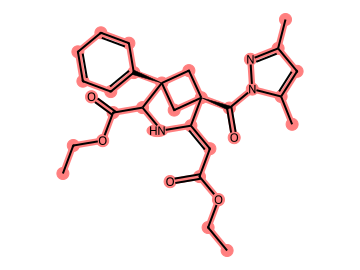

已取得查询流状态
表达式与实际执行状态
[#6:1]-[#6:2]-[#8:3]-[#6:4](=[#8:5])/[#6:6]=[#6:7]1\[#7:8]-[#6:9](-[#6:10](-[#8:11]-[#6:12]-[#6:13])=[#8:14])-[#6@:15]2(-[#6:16]-[#6@@:17]-1(-[#6:18]-2)-[#6:19](-[#7:20]1:[#7:21]:[#6:22](-[#6:23]):[#6:24]:[#6:25]:1-[#6:26])=[#8:27])-[#6:28]1:[#6:29]:[#6:30]:[#6:31]:[#6:32]:[#6:33]:1[
{
"family_id": "29e3ed1dd482d557f8937f76",
"role": "product",
"stage": 0,
"selection_scope_id": "06f6c8f24cc8b1ca40c2cf67",
"complete": true,
"stream_exhausted": true,
"enumeration_kind": "indexed_side_substructure_session_cursor_without_global_sort_or_size_window",
"matching_enumeration_complete": true
}
]